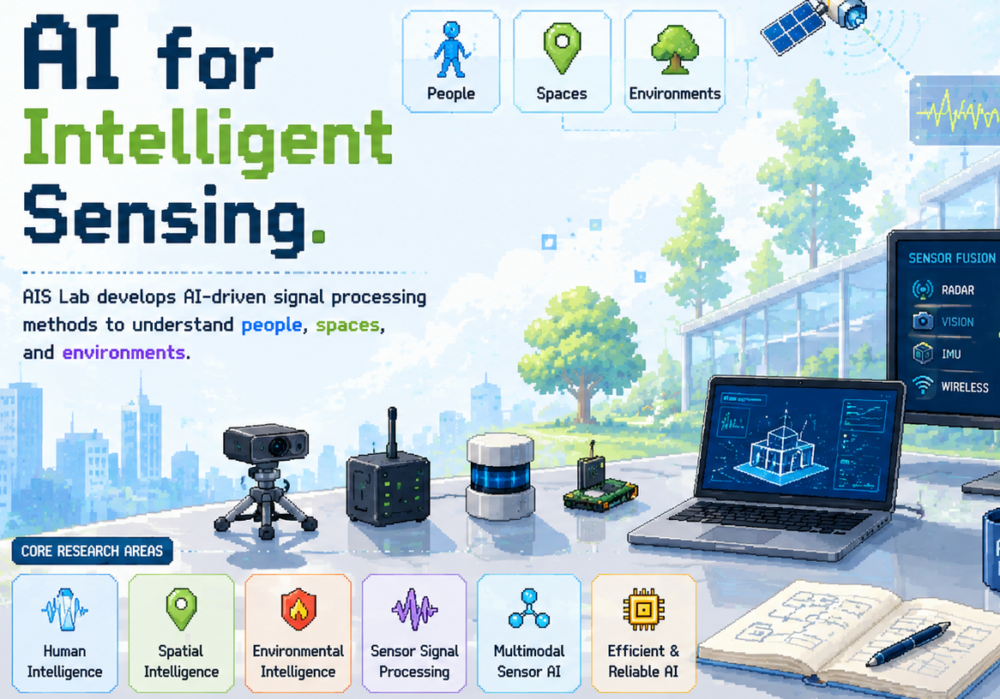
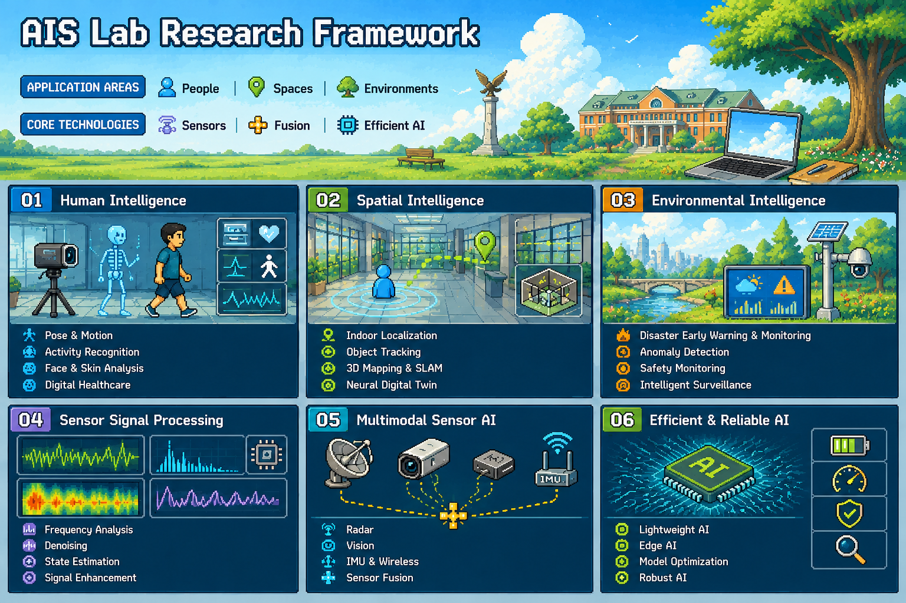
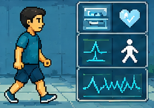
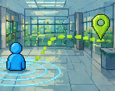
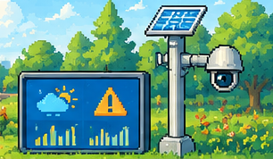
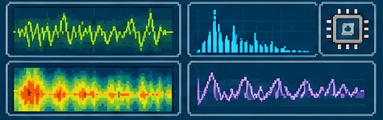
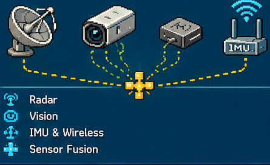
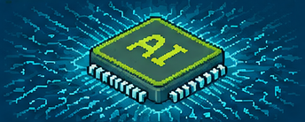

Younguk Yun
Principal Investigator
AI · Sensors Signal ProcessingYonsei University · Mirae Campus
AI and Intelligent Sensing Laboratory
Welcome. Whoever you are, may God bless you.
We believe technology should ultimately serve people. Our research connects artificial intelligence with radar, vision, wireless, and IoT sensors to better understand people and the world around us.
01 · About

AIS Lab develops AI-driven sensor signal processing methods to understand people, spaces, and environments.
We analyze radar, vision, IMU, wireless, and IoT sensor signals by combining artificial intelligence with signal processing, sensor fusion, and efficient computing technologies.
Our research spans human intelligence, spatial intelligence, environmental intelligence, sensor signal processing, multimodal sensor AI, and efficient and reliable AI.
02 · Research
Application-oriented intelligence supported by sensor signal processing, multimodal fusion, and efficient AI technologies.


IMAGE 01Understanding human posture, movement, behavior, and health conditions through intelligent sensing.

IMAGE 02Estimating locations, tracking objects, and reconstructing physical spaces as digital environments.

IMAGE 03Detecting hazards, environmental changes, and abnormal situations for intelligent safety systems.

IMAGE 04Improving noisy and uncertain sensor measurements through signal analysis and state estimation.

IMAGE 05Combining heterogeneous sensor signals to build robust and context-aware perception systems.

IMAGE 06Developing lightweight, resource-efficient, and dependable AI for real-world sensor systems.

03 · Principal Investigator
Assistant Professor · Department of Software
Yonsei University, Mirae Campus
윤영욱, 소프트웨어학부 · 조교수
연세대학교 미래캠퍼스
His research focuses on artificial intelligence for sensor signal processing, multimodal perception, radar and wireless sensing, human motion analysis, and efficient AI systems.
04 · Teaching
Undergraduate and graduate courses taught at Yonsei University Mirae Campus.
(The following courses are listed in alphabetical order.)
05 · Publications
06 · People
Researchers learning, building, and growing together.
Principal Investigator
AI · Sensors Signal Processing
Open position
MS / PhD applicants welcome
Open position
Research internship / capstone07 · News
AIS Lab website opened. Welcome to our new online home.
Joined the Department of Software at Yonsei University Mirae Campus as an Assistant Professor. print(" * hello Yonsei. * ")
08 · Contact
Students interested in AI, signal processing, sensors, human motion analysis, or AI systems are encouraged to contact us.
yu_yun@yonsei.ac.krAIS Lab
Artificial Intelligence & Sensor Laboratory
Department of Software
Yonsei University, Mirae Campus
1 Yonseidae-gil, Wonju-si,
Gangwon-do, Republic of Korea
Mirae Building
514
09 · Game Zone
A showcase of games created by students through vibe coding.
New projects will continue to be added to the collection.
For the best gaming experience, we recommend playing on a desktop PC.
(최적의 게임 환경을 위해 데스크톱 PC에서 실행해보세요.)
CASUAL GAME
Feed the professor as much as possible in this playful student-made game.
PUZZLE GAME
Arrange falling blocks, clear lines, and challenge your highest score.
CARD GAME
A modern browser-based solitaire inspired by the classic spider card game, featuring combos, smooth animations, effects, and multiple difficulty levels.
NEXT PROJECT
More student-created games will be added as new vibe coding projects are completed.